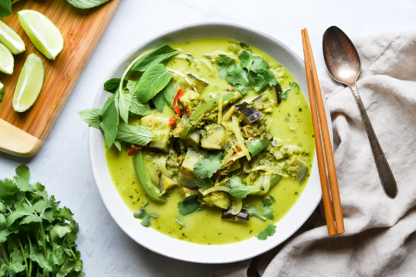

Green Curry Recipe

Discover the recipe
One of Thailand's most popular (and famous dishes), Thai Green Curry is a dish worth learning to make at home. Deriving its bright green color from fresh herbs, it is often prepared fiery hot in Thailand with loads of chilis. Our recipe is relatively tame but it's easy to dial up or down the heat simply by adding more/fewer chilis when making the curry paste. Thai curries are distinct from South Asian curries in that they more heavily use fresh aromatics like ginger, garlic, galangal, lemongrass than they do dried spices. Our chefs have developed a dried Thai curry spice blend with all the typical Thai aromatics and dried spices so that you can whip up a fresh curry paste with fresh herbs in just minutes. The curry paste is briefly fried to further develop the flavors before adding coconut milk for a silky smooth sauce that will unlock beautiful aroma and layers of flavor.
One of the best reasons to make this dish at home is because it is so easy customize it to use up whatever fresh vegetables and protein you have on hand. Double the batch of green paste and freeze for up to 3 weeks to easily make curry any night of the week. Our Thai green curry simmers chicken into tender bites. But it can easily be made vegetarian by using tofu, mushrooms, and just about any other veggie you want to throw in. Try it also with fish, pork, or shrimp.
Ingredients
- 4 cloves of garlic, minced
- 2 shallots, chopped
- ~1/2 bunch of cilantro (stems & leaves), roughly chopped
- 2 stalks fresh lemongrass, peeled & finely diced (core only)
- 1 Tbsp Piquant Post Thai Curry spice blend
- 1 tsp Piquant Post Kaffir Lime powder
- 2 tsp lime zest (save lime to juice)
- 2 Tbsp water
- 2 Tbsp olive oil
- 1 cup low sodium chicken broth
- 1 (14.5 oz) can of full fat coconut milk
- 1-1.5 lbs of boneless chicken breasts or thighs, chopped
- 2 tsp fish sauce
- 2 Japanese (narrow) eggplant or 1/2 small eggplant, cubed
- 1 cup snow peas
- handful (12-15) Thai basil leaves (regular basil works)
- 1 lime, juiced + extra lime for wedges
- 2 scallions, chopped on bias (diagonal) for garnish
- Cilantro leaves for garnish (optional)
- Steamed jasmine or white rice (optional)
Ready? Just follow these steps...
- Start by making the green curry paste. First, prep all fresh curry paste ingredients and add to a blender or large food processor. Next, blend into a puree, scraping the sides down with a spatula. Meanwhile, cook the white rice.
- Next, heat a wok, large skillet, or pot on Med-High then add oil. Then, add the entire curry paste batch and fry for 3-4 mins until the paste begins to thicken. Add broth and coconut milk then stir to mix. Simmer for 3 mins until coconut milk completely dissolves. Add chicken & fish sauce, then stir. Next, reduce heat to Med and bring the chicken and curry mix to a gentle simmer. Cook ~8 mins.
- Add eggplant and simmer for 5 mins. Add snow peas and simmer for another 4 mins. Remove from heat and add Thai basil leaves, lime juice, and scallions. Stir briefly to mix.
- Serve rice in bowls and dish green curry over top. Garnish with cilantro leaves and lime wedges.
Congrats, you've just made Green Curry for 4! Enjoy!
Return to homepage